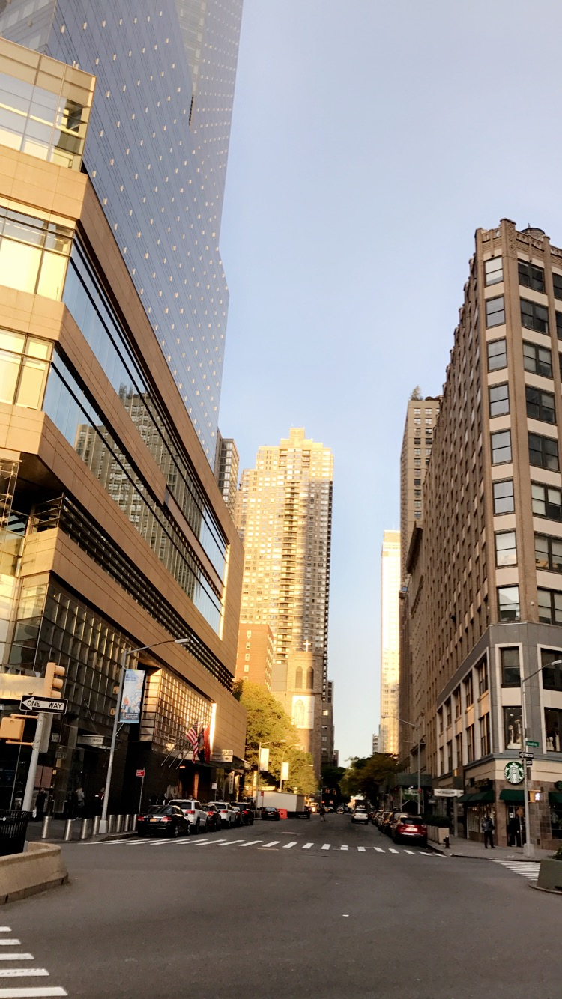
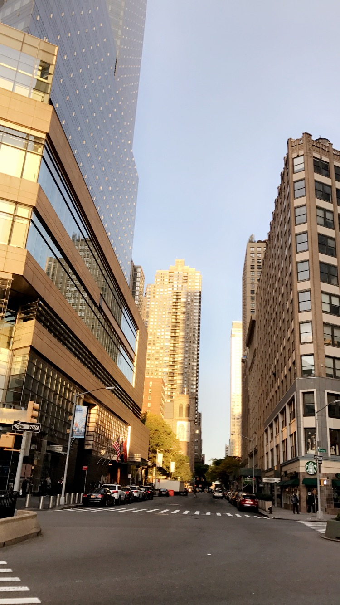
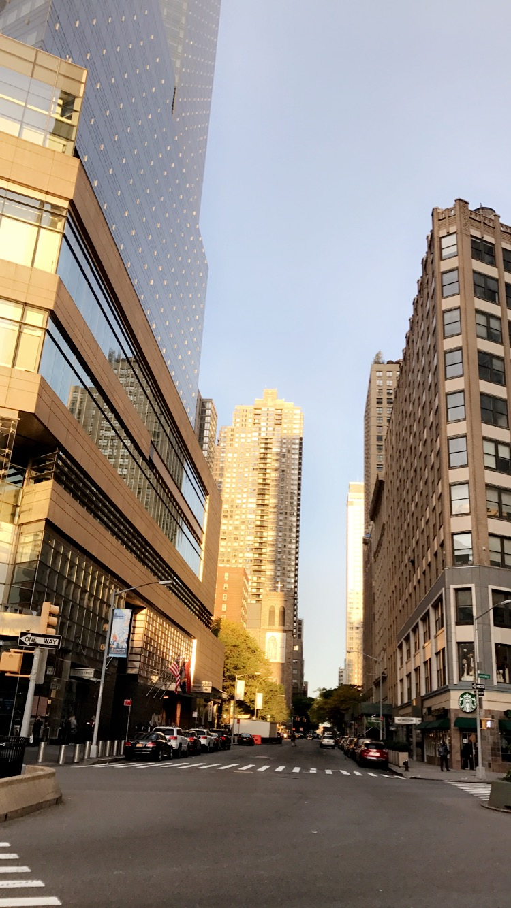

One of the things I enjoy, is capturing every essence of New York City's beauty. From the sunsets to the sunrises, New York exhibits its potential to be a unique canvas, a canvas that was worked on by a grand designer. I can't help but relish in the magnificent views I am bestowed with on a daily basis, hence why I decide to capture ever moment of it as seen below. These pictures offer an insight into my life. As they exude vibrant colors, they directly reflect my personality.

One of the positive aspects in my life has been Music. Music in the plethora of genres it comes with has truly shaped my perception of certain things, and has quite frankly influenced me to be better. Music has with it a driving and motivating factor. Depicted below is a list of albums that I have truly taken a liking to over the years due to its message and overall composition.